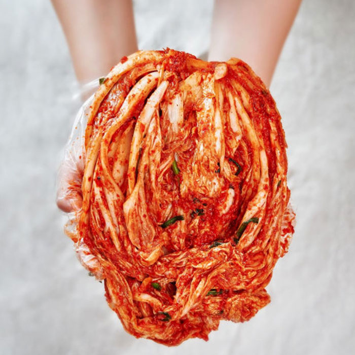
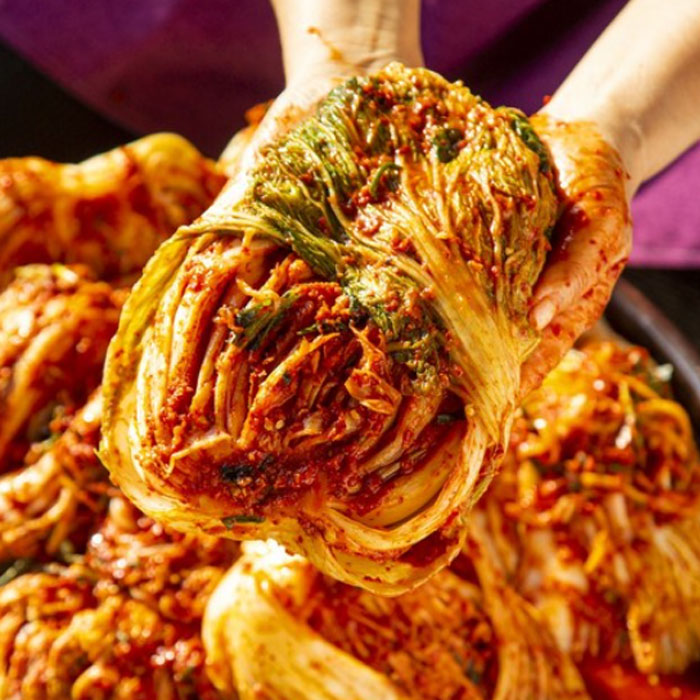
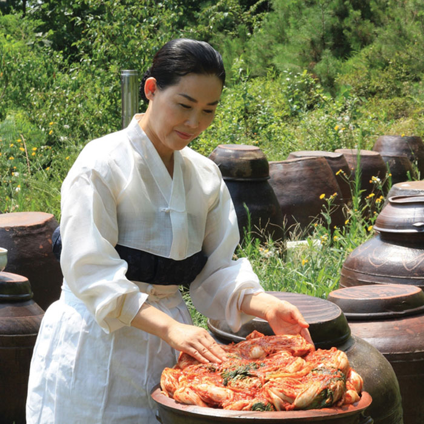
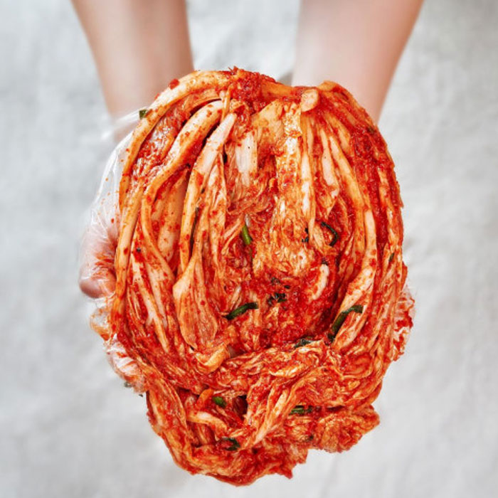
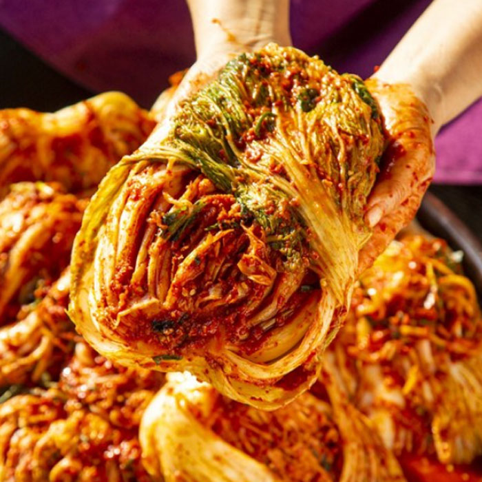
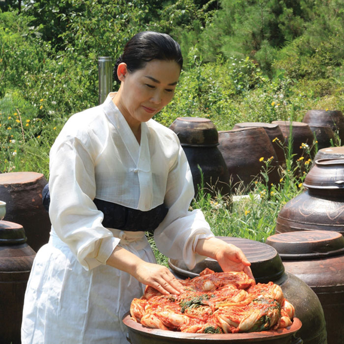

제 1회 대한민국
김장 김치 축제
|  |  |  |
| 전국 팔도 김치의 특색을 소개하고, 팔도 김치 제조 방법을 알아보고, 비교 할 수 있는 팔도김치전시관 | 한국의 김치문화 체험을 통해 참관객들에게 이색적인 추억과 다양한 김치 맛을보며 즐기는 공간 | 명인의 김치 제조 방법을 함께 배우며, 한국의 대표 음식인 김치를 맛보고, 김치 제조의 비밀을 알 수 있는 공간 |
|  |  |  |
| 전국 팔도 김치의 특색을 소개하고, 팔도 김치 제조 방법을 알아보고, 비교 할 수 있는 팔도김치전시관 | 한국의 김치문화 체험을 통해 참관객들에게 이색적인 추억과 다양한 김치 맛을보며 즐기는 공간 | 명인의 김치 제조 방법을 함께 배우며, 한국의 대표 음식인 김치를 맛보고, 김치 제조의 비밀을 알 수 있는 공간 |